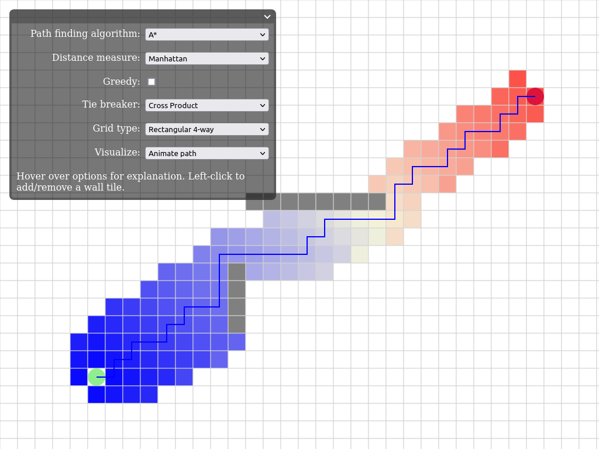
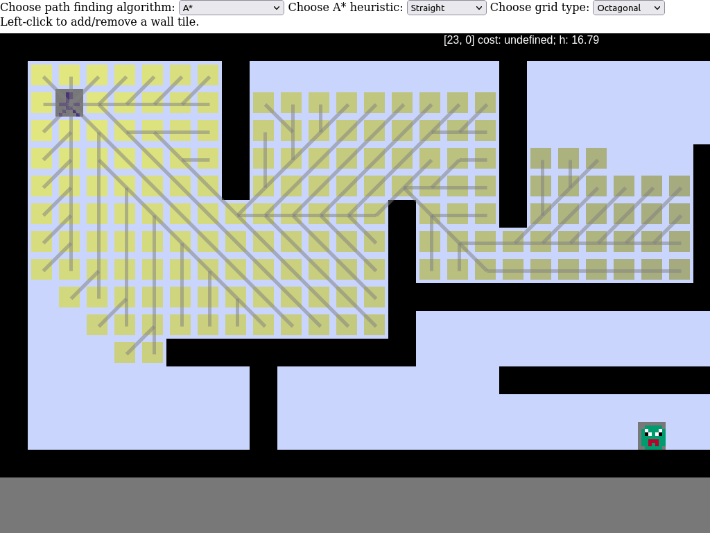
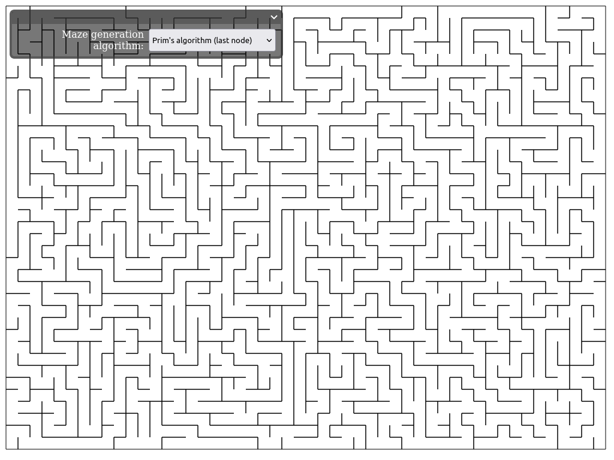
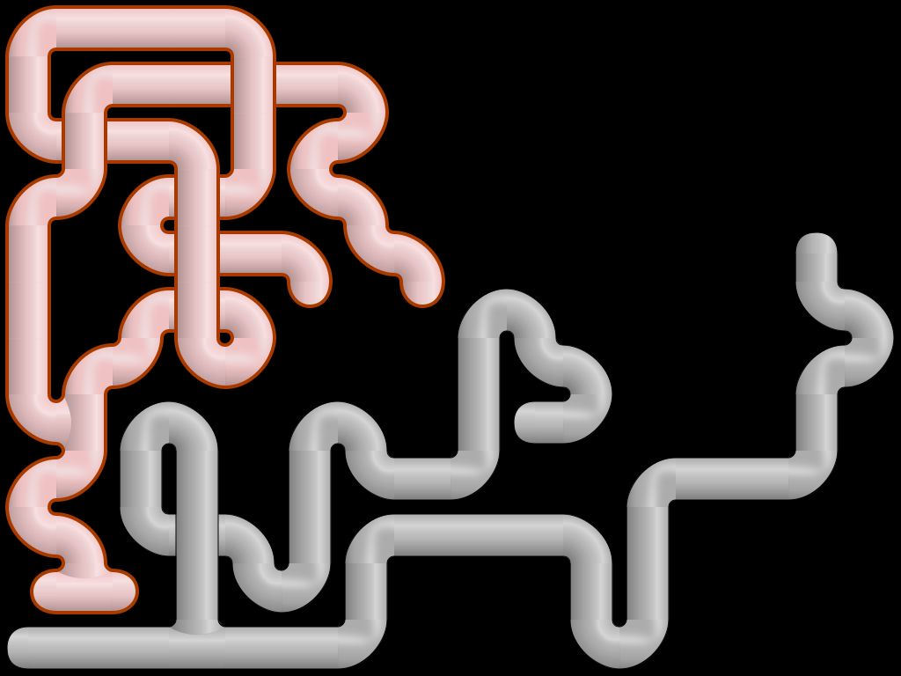
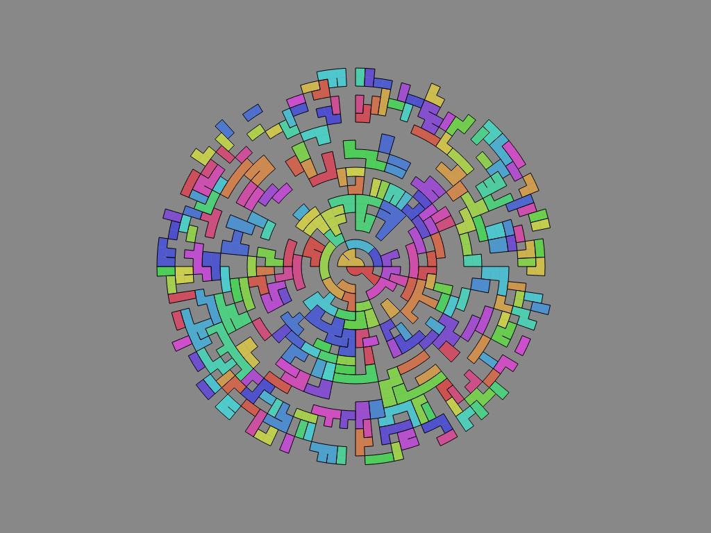

Helixgraph
Online demos of
helixgraph
algorithms
Interactive Path Finding

Interactive path-finding visualization in D3.js
Path Finding Game

Path finding game using phaser-ce TileMap
Maze Generation

Maze generation with your choice of algorithm
Weave Mazes

Generating weave mazes using phaser3 TileMap
Kruskal Mazes

Animated random Kruskal algorithm on a polar grid, using p5.js